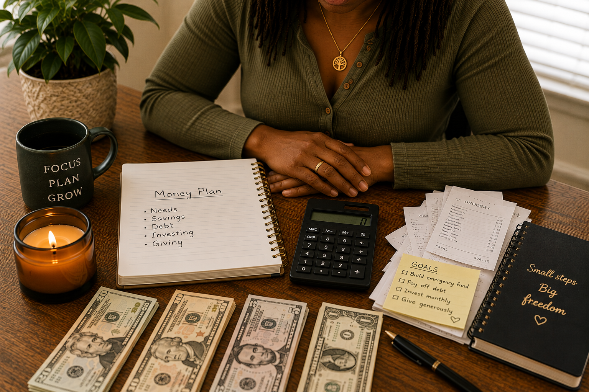

WHEN PAYDAY DOESN’T LAST
You get paid. So why are you broke before payday?
You pay bills. You buy food. You get gas. You buy some things you want. Then the money gets low, but payday is still days away.
I help you learn what to do with your money when you get it, so more of it can last.
Does this sound like you?
Payday comes. You feel better. Then the money gets low again.
You may use a credit card. Borrow from family. Wait to pay a bill. Or tell yourself, “I’ll fix it when I get paid again.”
Then you get paid, and the whole thing starts over.
It can happen at any income
Making more money doesn’t always make this stop.
You can make a little. You can make a lot. If all of your money already has somewhere to go before you get it, you can still run out before the next check.
You feel relief because you can finally pay for things.
Bills, food, gas, wants, family, and other costs take a piece.
There are still days left before payday.
You borrow, use credit, wait to pay something, or go without.
You get another check, but the old cycle starts again.
You can learn a new way
Your money needs a job before you spend it.
Before the money starts leaving your account, decide what it needs to do.
What pays the bills? What buys food and gas? What can you spend for fun? What goes into savings? What stays there?
This is where we start.

Hi, I’m Rukiyah Polk.
I’m a Money Behavior Strategist™ and money educator.
I teach people what to do with their money when they get paid.
I’m not here to fuss at you or tell you that you can never buy what you want.
You and I start with the money you’ve: what comes in, what has to be paid, what you spend, and what you want your money to do for you.
Then we talk about your money mindset — what you believe about money and how those thoughts can show up when you spend, save, borrow, or give.
From there, we make a plan for your next check.
Meet Rukiyah →Money mindset
What you think about money can change what you do with it.
Maybe you grew up hearing, “We can’t afford that.” Maybe spending feels good after a hard week. Maybe it’s hard to tell family no. Maybe you think, “I work hard. I deserve this.”
You do deserve to enjoy your money. But enjoying your money and spending all of your money aren’t the same thing.
Your money mindset is what you learned to think and believe about money. We look at that too, because your thoughts can show up in the choices you make with your money.
Let’s start a new cycle
When money comes in, give it a job.
You don’t need to be perfect. You need a simple plan you can use again and again.
- 01See what came in
Know how much money you’ve to work with.
- 02Pay what matters
Give money to your bills, food, gas, and other needs.
- 03Save and grow some
Put some money away before it all gets spent.
- 04Know what you can spend
Enjoy some of your money without spending the money needed for something else.
- 05Do it again
Use what worked. Change what did not.
One tool I use
I divide money into four parts.
Here’s one simple example with $1,000.
LIVE pays for things like housing, food, lights, gas, and everyday needs. SAVE is money you put away. GROW is money you use to help build more money over time. GIVE is money you choose to share.
The point is simple: don’t treat every dollar in your account like it’s free to spend. Give the money a job first.
How I can help
You don’t have to figure this out alone.
Start with the kind of help you need today.
I need help with one money problem.
1:1 Money Session · $247
Maybe you keep running out before payday. Maybe you can’t keep money in savings. Maybe you don’t know how much you can spend. We work on that one problem together. You leave with a written Money Action Plan™ that tells you what to do next.
See the $247 Session →This keeps happening again and again.
4-Week Guided Experience · $597
We spend four weeks looking at what keeps happening with your money, what you think and feel when it happens, what you can do differently, and what belongs in your new money plan.
See the 4-Week Experience →I want to start by myself.
Free help + workbook
Start with a free tool, a short read, or the workbook. Learn something you can use with your money today.
See Free Help →Think about your next payday
What if you knew what to do with the money before you spent it?
Your bills have money. Food has money. You know what you can spend. Some money goes into savings. And when the next payday comes, you’re not starting from the same place again.
That’s what we’re working toward.
Get Help With My Money